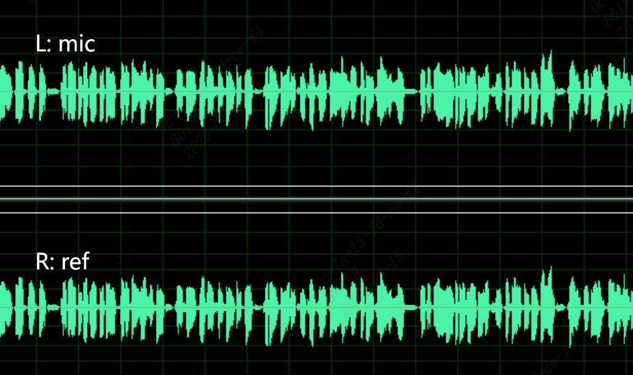
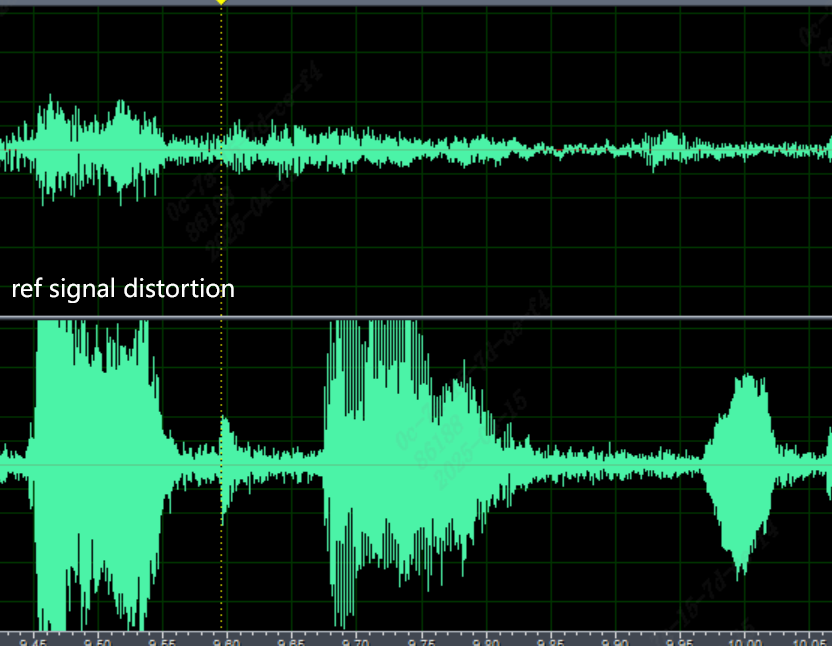

2. 介绍¶
2.1. 概述¶
[听觉回声消除的作用]：

如图所示，远端app会将麦克风录制的人声x(n)发送给sophgo,sophgo 会将数据传输给vqe的同时喇叭播放数据。
近端麦克风会将录制的人声y(n)和喇叭播放的经过空气传播后的x’(n)混合在一起发送给sophgo,x’(n)则是需要消除的回声。
vqe的输入是x’(n)和y(n)的混合信号，再加上参考信号x(n)，vqe的输出是消除回声后对y(n) agc,anr处理后的信号。
Audio Input的声音内容就是ain_record.pcm文件的内容。
注意：sophgo 有两种封装，一种是QFN封装，一种是BGA封装。QFN封装参考信号x(n)是在芯片内部做回连，BGA封装参考信号x(n)是在芯片外部做回连。
[算法基础要求]：
录音要求
采样率只支持8kHz或者16kHz，播放和录音参数要求一致。
AGC/ANR 仅支持单声道, 不支持立体声 。
AEC需使用双声道录音( 左声道为mic录取的近端声, 右声道为远端发送过来的声音)。
采样位深16位(enBitwidth = AUDIO_BIT_WIDTH_16)。
录取到的 左右声道不能失真 （如：波形太大消顶，mic和speak质量不佳，pcb模拟电路被干扰等导致的失真）。
左声道mic录取到的近端人的声音幅度要比录取到喇叭的声音大（远端声音），否则会影响算法处理效果。
右声道参考信号幅度 要比左声道mic录取的声音中的远端声音大，否则会影响算法处理效果。
正常的波形图（mic通道和参考信号通道波形都适中，没有失真，没有底噪干扰等）：

如下面的波形图是不行的

- 调整方法：
把ADCR通道的gain减小。QFN封装的建议设置成1，BGA的封装自行减小。
如果第一步进行了还是出现消顶失真，则把Audio Output的gain减小。
注：参考信号的幅度受对方发来的原始数据幅度，Audio Output的gain，ADC R的gain共同影响。
硬件要求
板端硬件有mic 组件。
板端硬件有speaker可供播放出声。
板子有AEC回路: speaker声音硬件回采到录音的右声道（ADC_R），没有受到干扰。
整机结构要求
MIC要有单独的音腔设计并密封，MIC要有外带防震橡胶套，防震效果要好。
MIC拾音朝向最好与喇叭方向相反。
喇叭要有单独的音腔设计，要有橡胶减振，防震效果要好。
MIC 和喇叭的距离越远越好，两者的成的角度要保证声音耦合小。
[理想调试环境需求]
要使用客户完整的样机, 样机尽可能结构密封。
所使用的 mic & spk 必须在客户完整样机内。
调适适当的ADC/DAC gain level, 确保mic in(收音)及ref in(播音回路)的稳定性。
先确认没有 pop noise 或 circuit noise 或讯号不连续的干扰之后, 再开始抓正确的speech pattern。